ユニークなEコマースブランドのためのアプリUIをデザインしました。これは、芸術への情熱を持つ30代の女性クリエイターをターゲットにしています。曲線美のあるエレガントなフォントとシンプルでバランスのとれた2つのフォントを活用し、ユーザーに響く鮮やかな浅葱色と紫の色合いを選び、浅葱色を強調するためにアクセントカラーは灰色を使用しました。インターフェースには目を引くグラフィックを特徴とし、典型的な高級感のある美学から逸脱して、ユーザーエクスペリエンスを犠牲にすることなく独創性を求める市場ニーズに応えています。標準的なEコマースを超えて、このアプリはクリエイターのアートやファッションを紹介する特別な機能を統合しており、ファッション雑誌の文化を思い出させるような、憧れの個人のスタイルを模倣したいというユーザーのための機能があります。 こちらからFigmaで体験できます